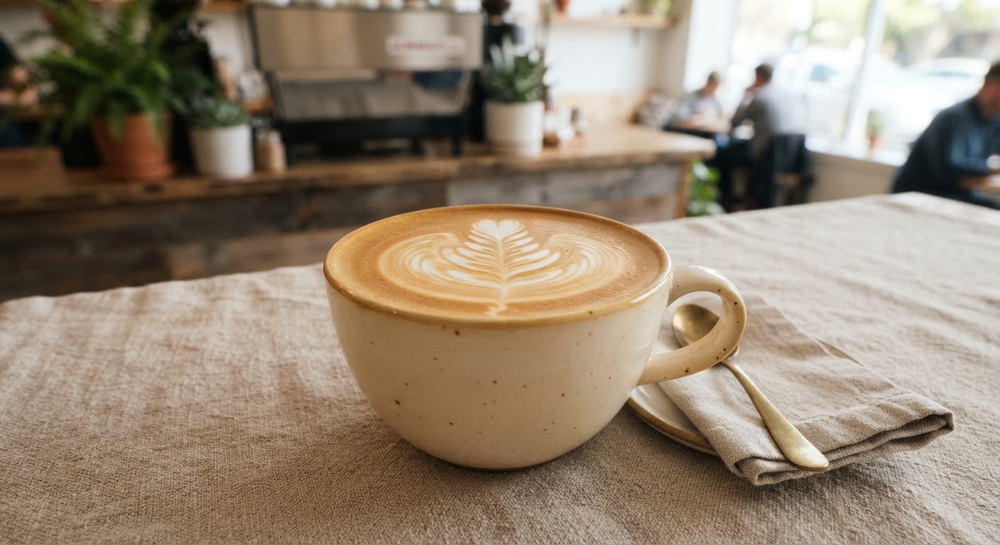
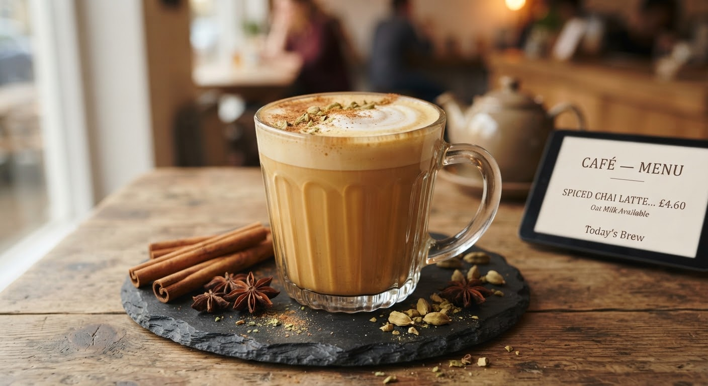
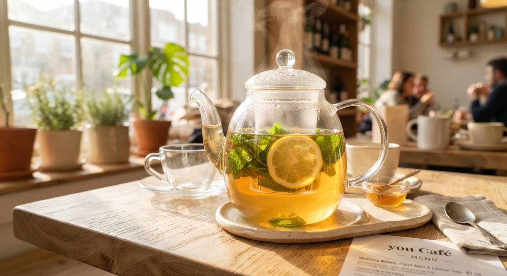

Freshly Roasted & Baked Daily
Something good for every hour
Coffee, tea, breakfast, lunch and fresh pastries, all made in-house each day.
north_east
roasted with warmth in our slow morning ovens

In-House Daily
Category 01
Third-Wave Brews
Coffee & tea
Our most-loved drinks. See the full drinks list for sizes and milks.

Espresso
$3.40Rich, sweet and balanced, with notes of cocoa.
Double Shot
Natural Process

Honey Oat Flat White
$5.20Double shot, oat milk, wildflower honey.
House Favorite

Cardamom Chai Latte
$5.00House-spiced black tea with steamed milk.
Whole Spices

Mint & Lemon Tea
$4.20Fresh mint, lemon and a touch of honey.
Caffeine Free
Category 02
All-Day Nourishment
Breakfast & lunch
Served all day. Vegetarian-friendly and made with local produce.
spa
Local organic farms • Sourdough starter aged 7 years

Kitchen Offerings
Made to order
Fresh
Avocado Sourdough
VSmashed avocado, lemon, chili flakes, seeds.
Garden Toastie
VWhipped feta, roasted peppers, basil.
Berry Granola Bowl
Greek yogurt, house granola, berries, honey.
Soup of the Day
DailyServed with warm sourdough.
Extra sourdough slice +$1.50
Gluten-free seed bread available